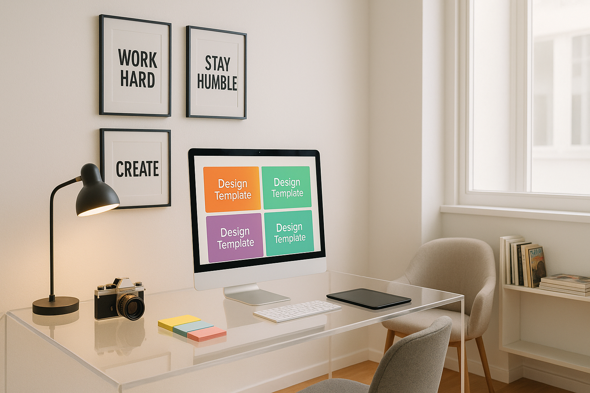
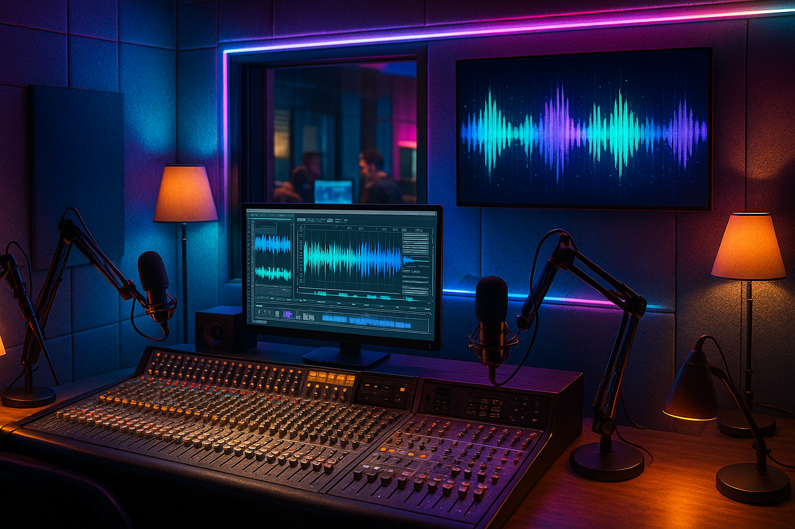
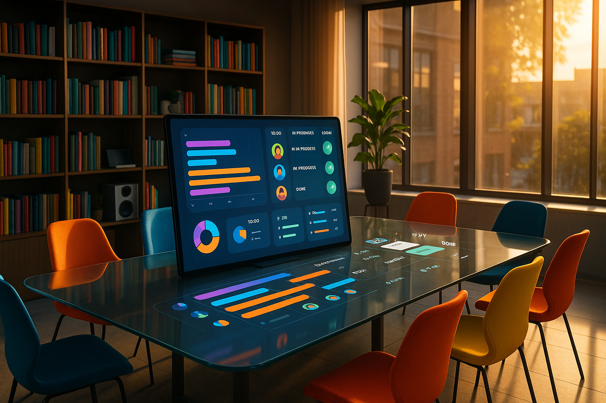

フリーランスとして駆け出しの頃、提案書と請求書、クライアント対応に時間を奪われ、自分の本業がおろそかになることが続きました。ある月、請求書処理に丸一日（約8時間）を費やしたことがあり、「これを半分にできれば……」と考えたのがAI導入のきっかけです。試しに文章生成や経理自動化ツールを入れたところ、管理業務が合計で約60〜70%削減され、空いた時間で新規サービスの企画ができるようになりました（以下は体験談や複数の事例に基づく値です）。ここからは、実際に効果が出ている10の事例を、体験談や数値、導入のコツを交えて詳しく紹介します。
文章生成ツールはブログ、提案書、SNS投稿などで即戦力になります。Web制作者Aさんの事例では、提案書作成の時間を3時間から30分に短縮し、受注率が15%向上したと報告されています。僕自身は、クライアント向けの要約作成にGPT-4を使い、1件あたりの工数を40分から10分に減らしました。注意点は「プロンプト設計」です。曖昧な指示では曖昧なアウトプットしか出ないので、目的、ターゲット、トーンを最初に明記することが重要です。さらに効果を出すために、よく使う「テンプレート」を作り、カテゴリ別にプロンプトを保存しておくと毎回の調整が楽になります。
納品前チェックにはAI校正ツールが便利です。翻訳者Bさんの例では、表記ゆれやスタイルの統一でクライアント満足が向上し、リピート率が25%増加しました。僕はAIの校正結果を必ず二重チェックし、固有名詞や業界用語は辞書登録して誤修正を防いでいます。実務的にはAIの提案を「候補」として扱い、人間のチェックで最終決定するワークフローが馴染みます。

テキストから画像生成（MidjourneyやDALL·Eなどの画像生成ツール）を使えば、アイキャッチや資料用イラストがすぐに用意できます。コンサルタントCさんは画像生成で外注を削減し、月約5万円のコスト削減と資料作成時間の40%短縮を達成しました。加えて、写真家のJさんは画像生成で合成アイデアを作り、撮影現場での試行錯誤が減り、撮影時間を平均で2時間削減できたと話してくれました。デザイン補助ツールは配色やレイアウト案を提示してくれるため、非デザイナーが短時間で見栄えの良い資料を作れます。実践的なコツは、ブランドカラーやフォントをテンプレート化しておくこと。これだけで修正回数が大幅に減りますし、外注に渡す際の指示コストも下がります。

講義録音の文字起こしや字幕作成にはOtterやDescript、音声合成には各種TTSが有効です。オンライン講師Eさんは、1本の講義動画を文字起こしして教材に再利用し、外注コストを1本あたり約2万円削減しました。動画編集も自動化ツールを活用すれば、SNS向け短尺動画を1日で数本量産でき、場合によってはエンゲージメントが3倍になることもあります。僕は講義音声のノイズ除去と自動要約を組み合わせ、1コースの準備時間を従来の2週間から3日へ短縮しました。さらに動画を分解して音声を記事に、要点をスライドに、自動タグを付けてアーカイブ管理することで二次収益の可能性が広がりました。
チャットボット導入でよくある質問を自動化すると、応答速度が改善され購入転換率が向上します。オンラインショップGさんはチャットボット導入で転換率が22%向上しました。導入時はFAQの粒度とエスカレーションルールを明確にし、定期的にログをレビューしてボットの回答精度を上げることが必須です。例えば返品ポリシーや発送状況の質問はボットで完結させ、クレーム系は即座に有人へエスカレーションする運用にしたところクレーム解決時間が半分になったという話もあります。
AI経理ツール（Freeeや弥生、QuickBooksの自動仕訳機能）で、領収書読み取り→仕訳→請求書発行を自動化できます。Hさんは月8時間かかっていた処理が1時間に短縮され、確定申告の準備時間も50%削減されました。実務では、定期的なルールのメンテナンスとバックアップ、税理士との連携が成功の鍵です。僕は毎月ツールの仕訳ルールを見直し、四半期ごとに税理士と帳簿の突合をすることで、申告前の慌ただしさをぐっと減らせました。

受信メールやチャットを解析してタスク化するツールは、納期遅延の抑制に効きます。マーケターIさんは対応可能案件を2社から5社に増やし、月間収入が約1.5倍になりました。ポイントは、重要度と所要時間をAIに学習させることで、現実的なスケジュールを自動生成できる点です。実践する際は、AIの提案するスケジュールに「バッファ」を組み込む設定をしておくと、突発対応で崩れにくくなります。
GitHub CopilotやChatGPTは定型コード生成やテストコード作成で生産性を高めます。ある調査では開発者の84%がAI導入を検討しており、51%が毎日活用しているとの報告があります。僕はルーティンなAPIラッパー作成をAIに任せ、設計やアーキテクチャの検討に専念して生産効率が約2倍になりました。注意点はコードレビューを必ず実施し、セキュリティや依存関係の脆弱性を確認することです。加えてAIに生成させたコードはライセンスや著作権の観点もチェックして運用しましょう。
まずは「最も時間を取られている業務」を1つ選び、1ヶ月の工数を可視化してから試験導入を行ってください。小さな自動化から始め、効果測定とROIを数値化しましょう。セキュリティ面ではAPIキー管理、データ保管ポリシー、必要に応じてクライアント同意を取得すること。出力に対する品質保証のために「必ず人が最終確認するルール」を組み込み、ログを取りながら改善サイクルを回すと投資効果が早く出ます。
僕が最初に自動化したのは提案書作成でした。初月はAIに慣れる時間を含めて工数が若干増えましたが、3ヶ月目には提案作成時間が70%短縮し、受注率も10%上昇しました。続けて経理とチャットボットを導入し、月間稼働時間が70時間から45時間に減少。削減した時間で新サービスを立ち上げ、初年度の売上が20%増加したのが実感です。具体的には、提案書テンプレートをAIに学習させ、業界別の文例ライブラリを作ったことが成功要因でした。
Q. AIに任せて品質は落ちない？ A. AIは土台作りとして有効ですが、最終チェックは必須です。特に専門用語やコンプライアンスが絡む場合は人の確認が必要です。 Q. 学習コストはどれくらい？ A. ツールに慣れるまでに平均1〜4週間。プロンプト設計やテンプレート化に投資すると長期で時短効果が高まります。 Q. 法的リスクは？ A. 顧客データを扱う際は利用規約やデータ保持方針を確認し、必要ならば匿名化や同意取得を。 Q. 依存するとどうなる？ A. ツール依存は想像以上に脆弱なので、定期的に手作業で確認するルーチンを残してリスク分散を。
AIは単なる便利ツールではなく、フリーランスの働き方を変える武器です。完璧を目指すよりまず一つ、面倒な作業をAIに任せてみてください。その小さな成功が、時間の余白と新しい挑戦を生み出します。僕の経験上、年間で数百時間の回復につながることも珍しくありません。さあ、あなたの業務のうち「一番しんどい作業」は何ですか。その一つから、今日から始めてみましょう。